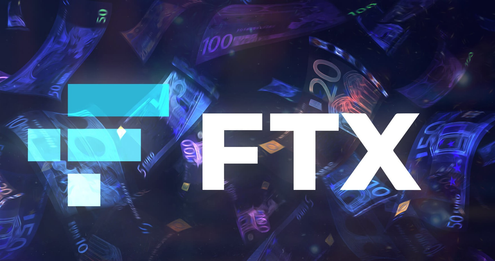
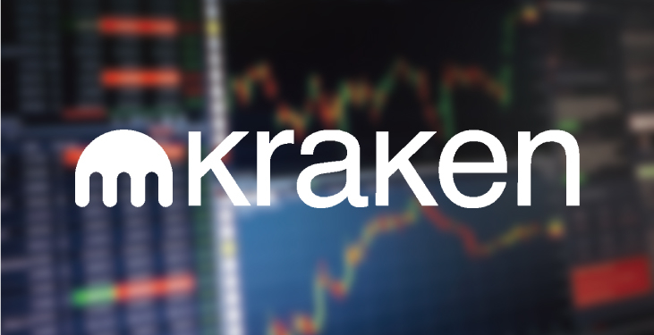

- Binance(幣安)
Binance (幣安)是由加拿大華裔工程師趙長鵬創建，
2017年他進行了ICO(發行虛擬貨幣來籌措第一筆資金)，這個代幣稱為Binance Coin幣安幣(BNB)，
投資ICO的投資者會獲得BNB作為回報，可用於在幣安平台交易加密貨幣並支付相關費用，
BNB也就是平台幣(交易平台自己發行的代幣)。
趙長鵬成功募集資金後，2017年7月在香港創建Binance (幣安)交易所，
之後又將伺服器及總部遷移至日本，但因為中國、日本對交易貨幣的監管非常嚴格，
因此最後又搬移至對虛擬貨幣較友好的馬爾他共和國，2018年也在台灣成立了辦事處。
至今Binance (幣安)已成為全球虛擬貨幣交易量第一名的平台，提供超過100種加密貨幣的交易，像是比特幣、以太幣、萊特幣等。

- FTX
FTX成立於2019年，平台上有70種以上的合約交易對、6種指數合約，
還有不爆倉槓桿代幣、波動率合約、美國2020總統大選合約、選擇權、原油合約等等。

- Coinbase Pro (無中文)
Coinbase是一家位於舊金山的公司，是美國第一家獲得投資市值達10億美元的加密貨幣公司，
也是第一家帶來10億美元年收入的公司。
2018年10月底，更獲得紐約州金融服務部的批准，成為加密貨幣的合格託管公司，
同年11月也為Coinbase Prime客戶(希望用商業資金進行交易的金融機構)
開設了場外交易櫃檯(OTC)。2018年10月，更宣佈以超過80億美元的估值追加3億美元的投資，
期望加速加密貨幣和數位資產的運用。
- Kraken
Kraken是歷史悠久的加密交易所之一，成立於2011年，
但經過兩年的開發和測試才於2013年上線交易。最初這間交易所僅提供比特幣、
萊特幣和歐元之間的交易，最後才增加了其他貨幣和保證金交易，
並將自己定位為專業的比特幣交易所。
2020年9月，Kraken也獲得懷俄明州銀行業委員會批准，
成為美國第一家可以設立銀行的交易所。
